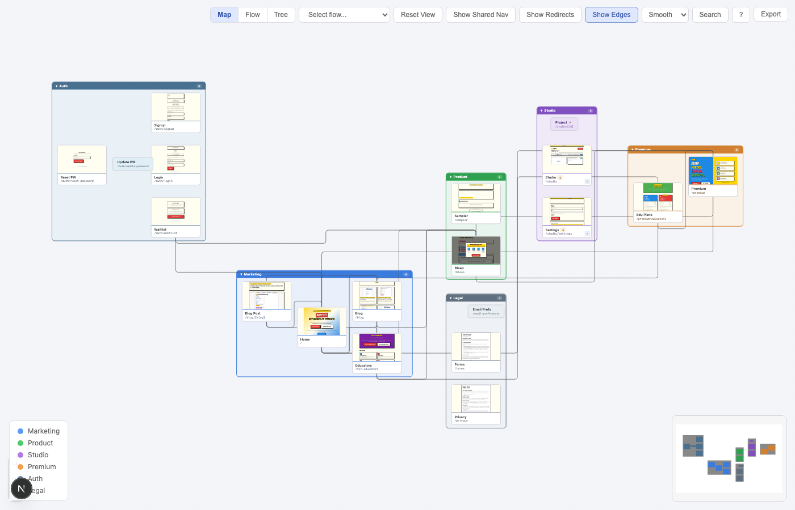

Interactive navigation map visualization for Next.js apps and websites

Multiple visualization modes, interactive exploration, and deep navigation insights
Double-click any group to zoom in and isolate it. Everything else dims away. See exactly how one section of your app connects.
Double-click nodes to browse flow step screenshots in a filmstrip viewer. See exactly what users see at each step of a journey.
Select a user flow to see it laid out as a step-by-step journey. Animate flows to walk through user paths one node at a time.
Three edge modes — smooth curves, obstacle-aware routing that avoids groups, or corridor bundling that groups related connections.
Accidentally drag a node? Undo restores position and group membership.
Nodes switch between detailed cards and compact pills as you zoom in and out.
Search nodes by label, route, or group with instant highlighting.
Arrow keys, Escape, shortcuts for every action. Full keyboard control.
Automatic theme detection. Respects system preferences.
Export your nav map as a PNG image for docs and presentations.
Drop-in React component. Works with any Next.js app.